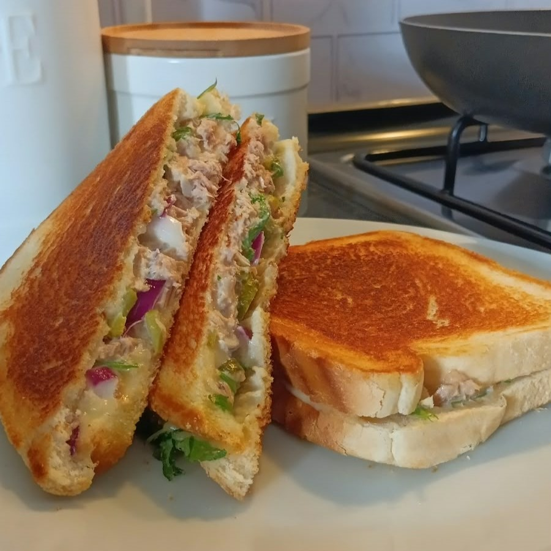
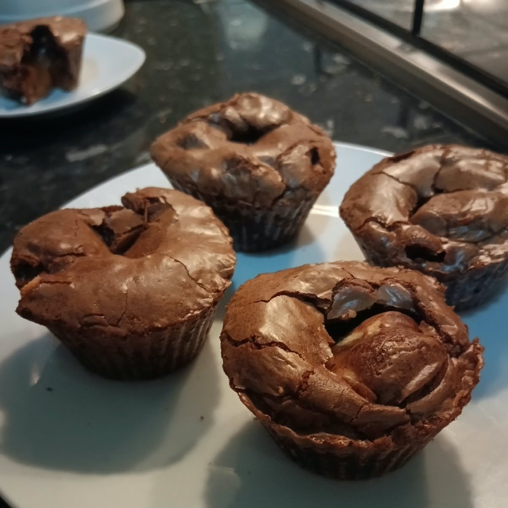
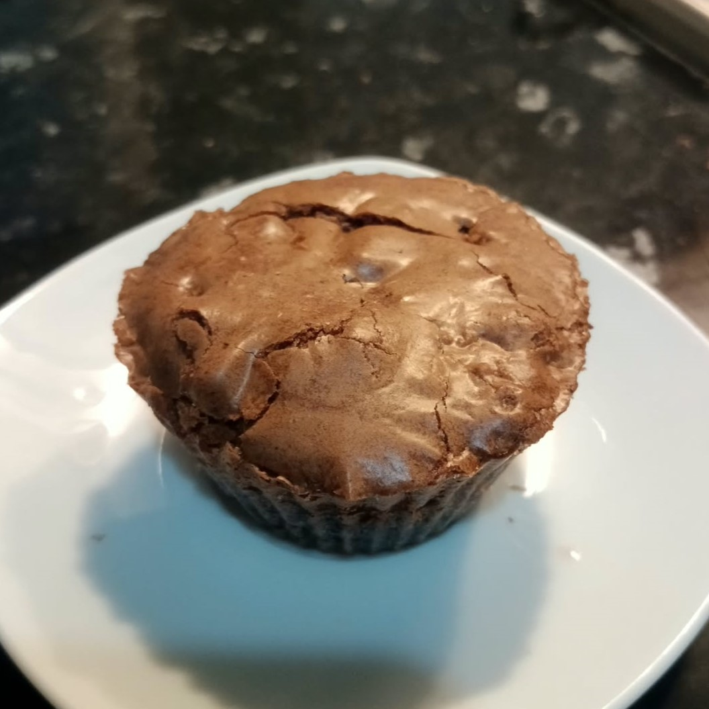
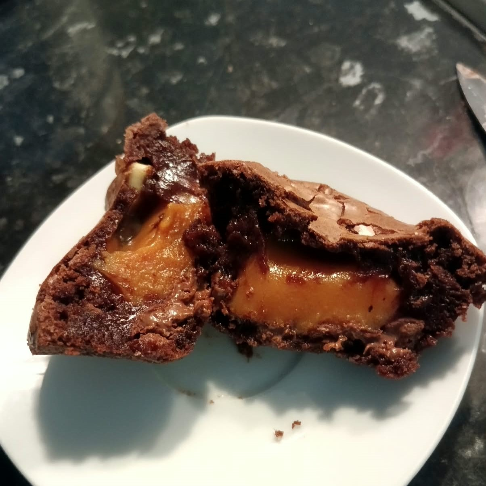
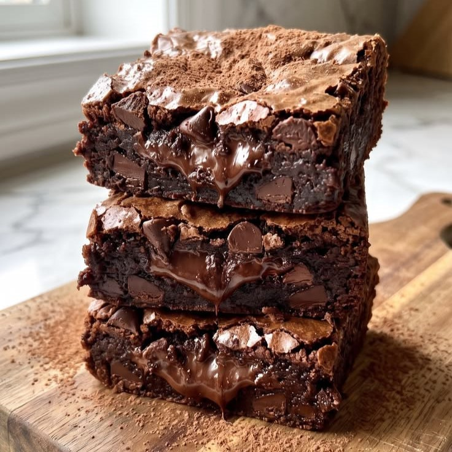
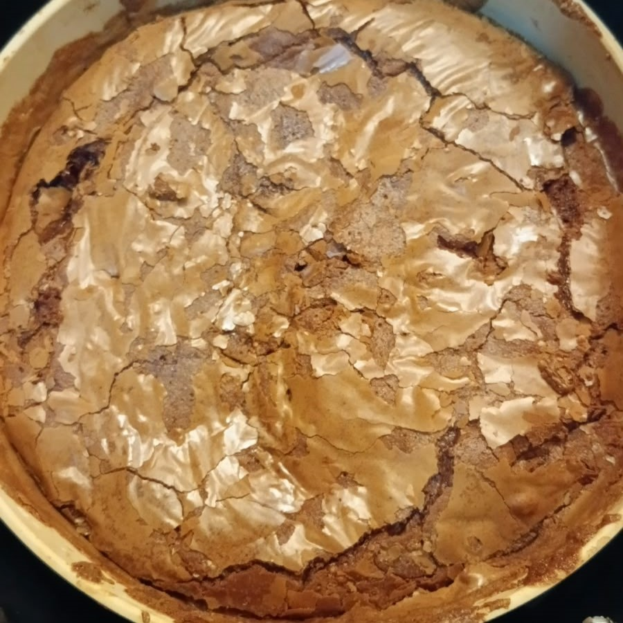
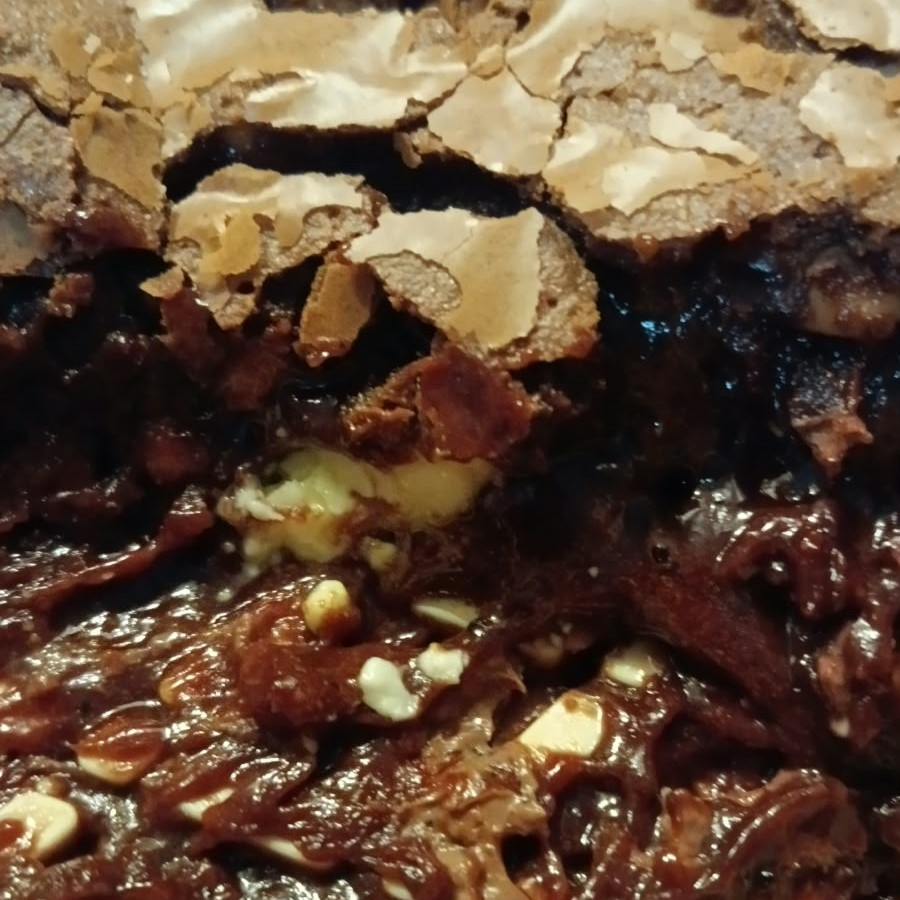
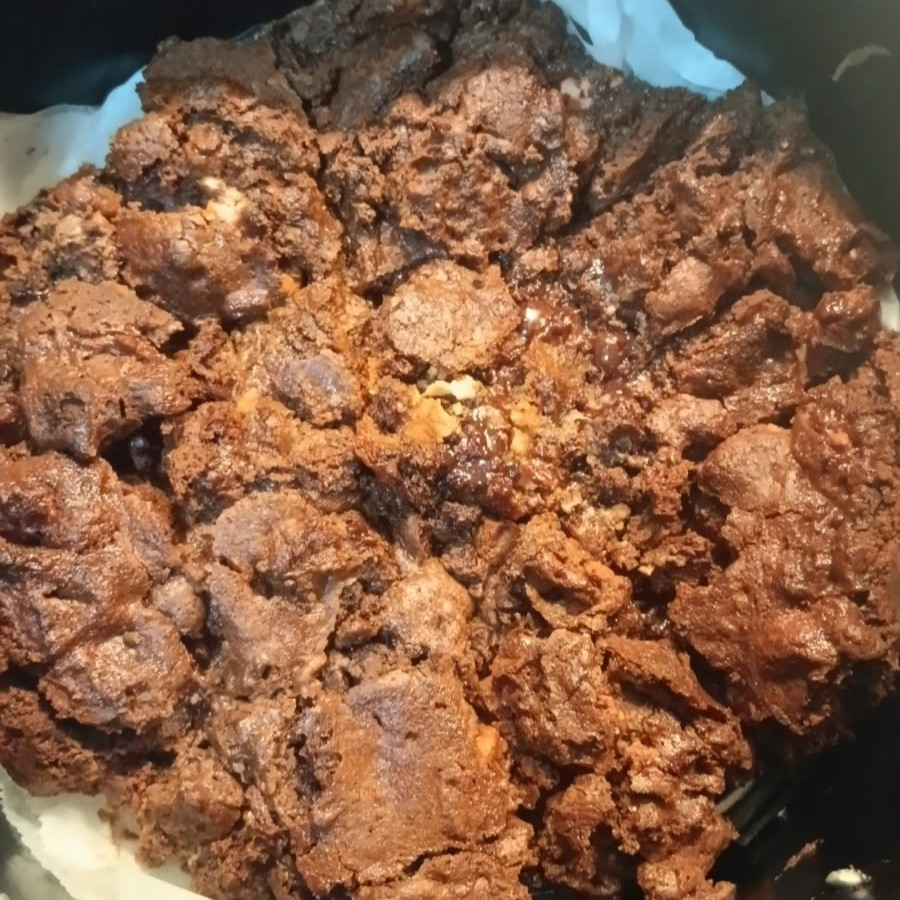
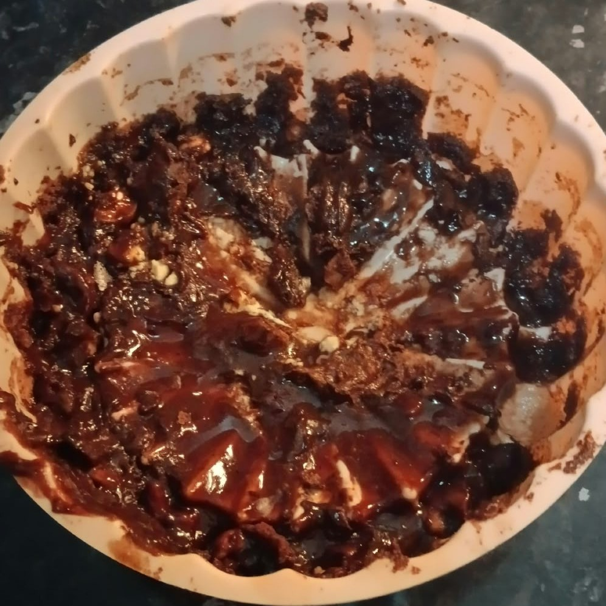
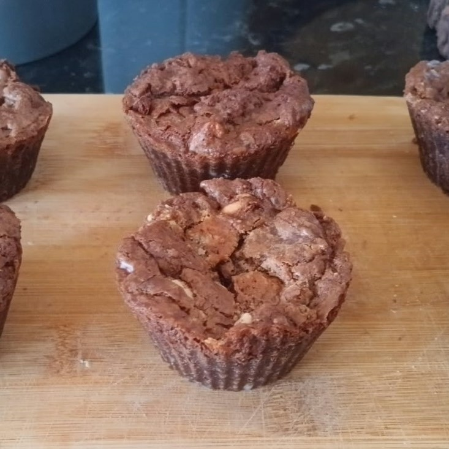

Um bom filho a casa torna
4 de novembro, 2026
4 de novembro, 2026
Bom, já faz muito, muito tempo que eu não escrevo aqui, na verdade fico até com um pouco de vergonha, queria ter me esforçado um pouco mais e ter escrito mais entradas aqui, mas a verdade é que nem tenho cozinhado muitas receitas novas, ou receitas propriamente ditas, estive apenas comendo o que parecia mais fácil de preparar ou às vezes até pulando algumas refeições, mas bem, vou tentar mudar isso e fazer algumas receitas novas, além disso quero atualizar o site, tenho muita vontade de mostrar ele logo…
Até fiz algumas tentativas de fazer novas receitas, mas de uma maneira ou outra sempre faltava algum ingrediente, e os ingredientes que foram de fato comprados tinham um fim trágico, utilizados em alguma outra receita de maneira oportuna, em dias onde a fome e a preguiça me venceram.
Mas bem hoje vou comentar da última e única receita que fiz desde então, o Tuna Melt, ainda é um pouco estranho escrever aqui como se eu estivesse falando para mais alguém, como se fossem ler isto haha.
Devo começar dizendo que esta foi uma receita relativamente simples de fazer, e os ingredientes também não foram muito difíceis de encontrar, bem, com a exceção do glutamato monossódico que eu tive que encomendar mesmo, mas acho que se eu tivesse procurado com mais afinco em outros mercados eu provavelmente teria encontrado por aqui também.
A receita me agradou muito, não acho que atum seja necessariamente incrível mas gostei bastante da combinação de todos os ingredientes, e o preparo é basicamente isso mesmo, a combinação de todos os ingredientes, acho que no fim ele acaba sendo um sanduíche muito elaborado, o que não diminui o mérito da receita de nenhuma maneira. Achei ele bem gostoso na verdade, e também agradou aqueles que comem peixe aqui em casa.
Eu fiz ela de novo um par de vezes na verdade, no fim ela cumpre muito bem os requisitos de prática e com ingredientes bastante comuns que tem sido o tema do que tenho comido nos últimos tempos, com certeza é algo que vou acabar comendo um par de vezes ao decorrer dos meses.
Eu gostaria de comentar um pouco mais sobre a receita, mas confesso que faz um tempo desde a última vez que comi ela, então acho que vou simplesmente deixar aqui a foto da minha primeira tentativa e afirmar, não sem vergonha, que buscarei fazer mais receitas novas e comentar sobre elas aqui!

Ta bonito né!
24 de setembro, 2026
Bom, mais uma vez venho aqui comentar sobre o brownie, sim eu fiz ele de novo antes de qualquer outra receita, eu não podia simplesmente prosseguir para a próxima sem antes sentir que consegui fazer ele em condições!
Usei as formas individuais mesmo, aquelas para cupcake, elas cozinham melhor o brownie na air fryer, para ser honesto, nada me fez querer comprar mais um forno do que estas últimas semanas fazendo brownie. Mas enfim, contemplem as evidências do meu sucesso!

Finalmente!
Bem, para estes eu fiz algumas coisas diferentes, mas acho que elas não tiveram influência alguma no quão bem eles saíram dessa vez, eu fiz um brigadeiro de caramelo salgado (que nasceu depois de uma tentativa fracassada de fazer um doce de leite, mas enfim) e depois de congelar em bolinhas eu as coloquei no centro de cada brownie, também fiz este brownie sem as castanhas, simplesmente porque elas acabaram, no fim minha irmã gosta mais deles sem castanhas mesmo, então talvez seja para o melhor.
E falando nisso, esta versão dos brownies foram um grande sucesso aqui em casa! Isso me deixa bastante contente, não vou mentir, elas já tinham comentado que gostaram dos outros, mas desta vez eu pude estar lá no momento em que provaram, e ver como gostaram deles me deixou bastante feliz.
Eu particularmente acho que, a receita (a qual jamais irei revelar, perdão, mas não me arrependo) não precisa do caramelo salgado, eu não acho que ficou ruim ou algo do tipo, mas realmente penso que é um adicional desnecessário, o brownie é maravilhoso por si só e adicionar o caramelo salgado não necessariamente acrescentou em seu sabor.
Mas bem, acho que por enquanto é isso, vou confessar, pretendo fazer mais brownies, muitas vezes ainda, mas por hora eu penso que farei outras receitas, e com certeza trarei essas como entradas no diário… para dar uma variedade também, porque até então só tem brownie por aqui haha.

Agora sim,

Sucesso!
17 de agosto, 2026

(Foto ilustrativa)
Não o link não está quebrado, esta receita é secreta e muito especial, feita por alguém muito especial que não deve ser nomeada. Eu paguei muito caro por ela (valeu a pena) e não darei ela a ninguém! Nem mesmo o Batman seria capaz de tirar essa informação de mim!
Bom, no momento em que estou escrevendo esta entrada eu fiz o Brownie duas vezes, devo dizer que das duas vezes ele não cozinhou muito bem haha...
As duas vezes ele cozinhou bem em cima e ficou com uma casca bastante linda, apesar de eu não ter registros da primeira casca sem ela estar completamente destruida, eu tenho fotos da segunda que colocarei abaixo. Mas embaixo eu devo dizer que ele ficou... simplesmente, cru.

Por fora, lindo!

Mas por dentro...
A primeira vez que fiz o brownie e tirei ele e vi que estava completamente cru, decidi imediatamente colocar ele de volta na air fryer, a esse ponto não lembro por quanto tempo ou quantas vezes aquela massa voltou para o fogo, mas devo dizer que foram muitas, no final eu tinha uma grande massaroca de chocolate que mais parecia um biscoito do que um brownie, mesmo assim, mesmo assim, tenho que admitir que estava uma delicia, e apesar de eu não ser nenhum especialista, tenho que dizer que não é uma opinião minha, aquilo estava objetivamente saboroso.
Quero ser claro aqui em dizer que eu atribuo todo o subjetivo sucesso desta primeira tentativa do brownie a receita e a sua criadora. Apesar da primeira tentativa ter sido um "fracasso" ali eu tinha decidido que faria aquela receita quantas vezes fosse necessário, até acertar, bom, não é como se ela durasse muito aqui em casa.
Agora o fracasso da primeira receita, e vou tomar essa liberdade, eu atribuo a maldita forma de silicone que simplesmente não cozinha a massa na parte de baixo sem importar o que eu faça!
No fim o que deu certo na segunda foi, depois de cozinhar a parte de cima novamente e a parte de baixo ficar crua (mesmo que relativamente melhor que a primeira vez), foi colocar a massa em formas infividuais menores, o brownie ficou parecendo um cupcake, mas pelo menos está bonitinho, cozinhado, e naturalmente, saboroso.

A primeira falha

Maldita forma
Mas chega de falar da parte má disso tudo, tenho que afirmar que apesar de tudo o gosto é maravilhoso, a massa é deliciosa ainda mais quando eu encontro um pedaço de chocolate no brownie, especialmente o branco, devo dizer que ele fica muito gosto depois de tostado dentro da massa, as nozes também dão um contraste bastante interessante, não sou nenhum especialista, mas nunca comi um brownie tão saboroso! Posso pensar em algumas diferenças comparado a outras receitas que já vi, mas não vou falar delas porque como pontuei no inicio desta entrada, paguei caro por esta receita e não estarei compartilhando-a tão facilmente!
Bom, acho que é só por esta entrada, concluo que a receita é maravilhosa e eu certamente farei ela muuuitas vezes mais, me sinto completamente afortunado de tê-la, e as sombras sussurram sobre outras versões da receita... especialmente uma de leite ninho me chama muito a atenção, quem sabe, eventualmente, eu não escrevo algo aqui sobre ela.

Sucesso?